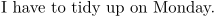
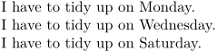

See Comma Separated Lists for details of lists in ConTeXt
Processing a comma-separated list of values
Suppose you defined a command like this one somewhere in your document:
-
\def\IHaveTo#1#2{I have to #1 on #2.\par} \IHaveTo{tidy up}{Monday}
- 
But sometimes you have to repeat some task more than once. In this case you can define a new command:
-
\def\IHaveTo#1#2{I have to #1 on #2.\par} \def\MyMumOrderedMeTo[#1]#2% {\processcommalist[#1]{\IHaveTo{#2}}} \MyMumOrderedMeTo[Monday,Wednesday,Saturday]{tidy up}
- 
In case a command \IHaveTo is already defined in a slightly different way:
-
\def\IHaveTo[#1]#2{I have to #2 on #1.\par} \def\MyMumOrderedMeTo[#1]#2% {\begingroup \def\processitem##1{\IHaveTo[##1]{#2}}% \processcommalist[#1]\processitem \endgroup} \MyMumOrderedMeTo[Monday,Wednesday,Saturday]{tidy up}
-

Processing a dash-separated list of values
Sometimes you have more work to do than just that boring stuff at home. And as it is quite important as well, you don't want to loose your time enumerating all of the tasks. Being able to do something like
\IHaveToDoTheTasks[1-4,7,9-11]{until tomorrow}
may sound like a good idea.
Suppose you already defined:
\def\IHaveToDoTheTask[#1]#2{The task #1 has to be done #2.\par}
You have to define some macros first (thanks to Taco!):
% a few auxiliary core macros are needed to uncompress the list. % % \uncompresslist is the twin of the already existing \compresslist % which works in the other direction (syst-new) % \unprotect % I guess this function is already available but couldnt find it... % \def\apptomac#1#2% {\ifx#1\empty\def#1{#2}\else \@EA\def\@EA#1\@EA{#1,#2}\fi} % the next macro does this: % % \itemwithdash<<9-11>>- => \dorecurse {<<1+11-9>>} % {\apptomac\uncompressedlist<<9-1+\recurselevel>>} % % (the 1+ and -1 are needed to solve a counter offset.) \def\itemwithdash#1-#2-% {\@EA\dorecurse\@EA {\the\numexpr 1+#2-#1\relax}% {\@EA\apptomac\@EA\uncompressedlist\@EA {\the\numexpr #1-1+\recurselevel\relax}}}% % top level. The result will be in \uncompressedlist \def\uncompresslist[#1]% {\def\uncompressedlist{}% \def\processitem##1% {\doifinstringelse{-}{##1} {\itemwithdash##1-} {\apptomac\uncompressedlist{##1}}}% \processcommalist[#1]\processitem } \protect
And then you're ready to define
\def\IHaveToDoTheTasks[#1]#2% {\begingroup \uncompresslist[#1]% <= Yeah! \def\processitem##1{\IHaveToDoTheTask[##1]{#2}}% \processcommacommand[\uncompressedlist]\processitem \endgroup}
Guess what! Your \IHaveToDoTheTasks[1-4,7,9-11]{until tomorrow} results in:
So - what are you still waiting for? Go back to work and do them right away!
Comments
The code for processing dash-separated lists resulted from thread [1] and will be used in some modules such as Raw steps module. It would be nice if processing dash-separated lists of values would make it into the ConTeXt core.